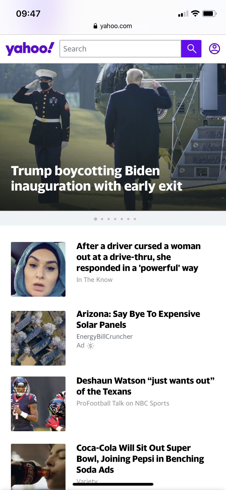

Utilizing Visual Hierarchy
Cavender's

I thought this site did a good job of using visual hierarchy. They draw your attention to the center of the page immediately with the enticing "$30 OFF" words that are big and in your face. Who doesn't want thirty dollars off? Your eyes then wander to the words below to learn more. After learning more you travel to the Cavender's logo at the top. Then you can decide whether to shop around or go check out the details for the great deal they have going on. It is simple, not cofusing, and very impactful. Great job Cavender's.
Contemplating Contrast
Spotify
Spotify has some very fun contrast going on with their site. The bright green against the blue provides some visual interest and good contrast. The white against the black for the header and footer have very nice contrast as well providing a place for the logo to really pop.
Wrapping it up with Alignment
Yahoo!
Alignment is something that bring ease to the reader, it creates a flow that keeps you going. Yahoo! did a great job of using a nice left alignment to provide a comfortable way to keep you moving through the material. I thought it was a nice stragihtforward way to organize this site.